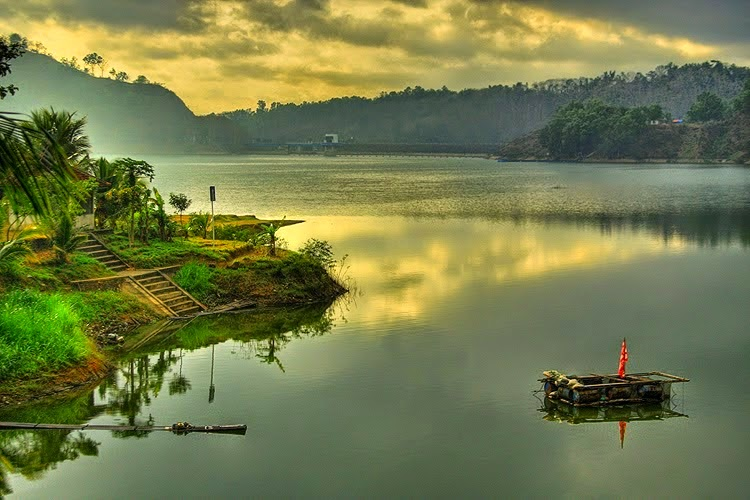
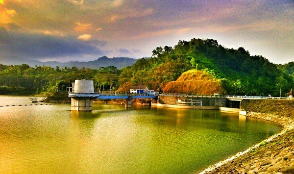
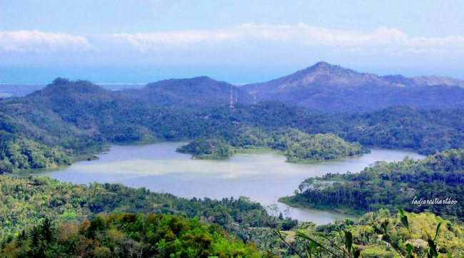

Waduk Sermo
Waduk yang diresmikan oleh Presiden Soeharto 20 November 1996 silam dibuat dengan membendung Kali Ngrancah, dengan biaya pembangunan mencapai Rp 22 miliar dan diselesaikan dalam waktu dua tahun delapan bulan. Waduk Sermo benar-benar merupakan wisata alam yang sangat alami keindahannya. Keindahan Waduk Sermo dapat Anda nikmati sepanjang 21 kilometer yang berbentuk lingkaran dan beraspal. Selain itu, Anda juga bisa menikmati keindahan Waduk Sermo Yogyakarta dengan perahu wisata air. Banyak hal yang bisa dilakukan untuk sekedar menikmati kemolekan alamnya. Anda bisa mengekspresikan diri dengan bersepeda, jogging atau bahkan memancing di Waduk Sermo. Anda juga bisa duduk santai bersama teman-teman atau pun kekasih menikmati pemandangan dari dataran tinggi yang ada disana. Menikmati kesejukan udara perbukitan juga bisa dilakukan dengan duduk santai di gubuk sekitar waduk. Pemda setempat memanfaatkan Waduk Sermo tidak hanya sebagai tempat liburan keluarga saja. Akan tetapi juga sebagai irigasi untuk mengairi sawah atau tempat daerah sekitar. Di sana juga ada kantor pengelolaan Waduk Sermo yang dapat memberikan info lengkap terkait Waduk Sermo, entah itu sejarah dan sebagainya.
 Sekali dayung, dua tiga pulau terlampaui. Istilah ini sangat akrab di telinga kita. Istilah ini sangat pas juga bagi anda yang berkunjung ke Waduk Sermo, karena jalur menuju Waduk Sermo juga searah dengan tempat wisata lain yang tidak kalah indahnya yakni Kalibiru dan Gunung Gajah. Yogyakarta memang tidak pernah lepas dari istilah kota wisata. Salah satunya Waduk Sermo ini di Kulon Progo Yogyakarta. Segera nikmati keindahan wisata alam ini sekarang juga. Selamat berwisata !!!